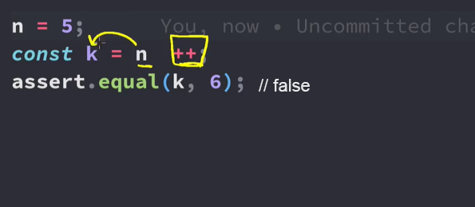
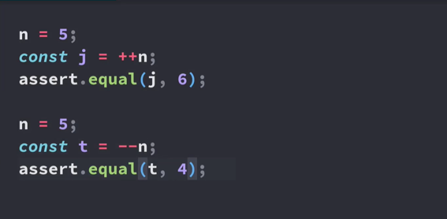

Incrementing numbers is a common task to perform when writing programs. So
common that there is an operator dedicated to just incrementing numbers.
However, it does come with a few caveats to be aware of.
Increment and Decrement Operators:
TypeScript provides two operators for incrementing and decrementing variables:
Postfix Increment:
In postfix increment, the ++ operator is placed after the variable.
The increment operation is performed after the current value is used or evaluated.
let a = 10;
let b = a++;
// Now, a is 11, but b is 10 (the previous value of a)
In this example, the current value of a is assigned to b before a is incremented.
So, a ends up with the value 11, but b retains the previous value of a, which is 10.
Increment (++): Adds 1 to the variable's value.

Decrement (--): Subtracts 1 from the variable's value.
let count = 5;
count++; // Increment count to 6
count--; // Decrement count to 5
You can use these operators both as pre-increment and post-increment.
Pre-increment increases the value before its use, and post-increment increases the value after its use.
Prefix Increment:
In prefix increment, the ++ operator is placed before the variable.
The increment operation is performed before the value is used or evaluated.
let x = 5;
let y = ++x;
// Now, x is 6, and y is also 6
In this example, the value of x is incremented before its value is assigned to y. So, both x and y end up with the value 6.

let x = 10;
let y = ++x; // Now x and y are both 11
Arithmetic Assignment Operators:
TypeScript provides shorthand operators that combine arithmetic operations with assignment:
Add and Assign (+=): Adds a value to the variable and assigns the result to the variable.
Subtract and Assign (-=): Subtracts a value from the variable and assigns the result to the variable.
Multiply and Assign (*=): Multiplies the variable by a value and assigns the result to the variable.
Divide and Assign (/=): Divides the variable by a value and assigns the result to the variable.
Modulo and Assign (%=): Calculates the remainder and assigns it to the variable.
let total = 10;
total += 5; // total is now 15
total -= 3; // total is now 12
total *= 2; // total is now 24
total /= 4; // total is now 6
total %= 5; // total is now 1